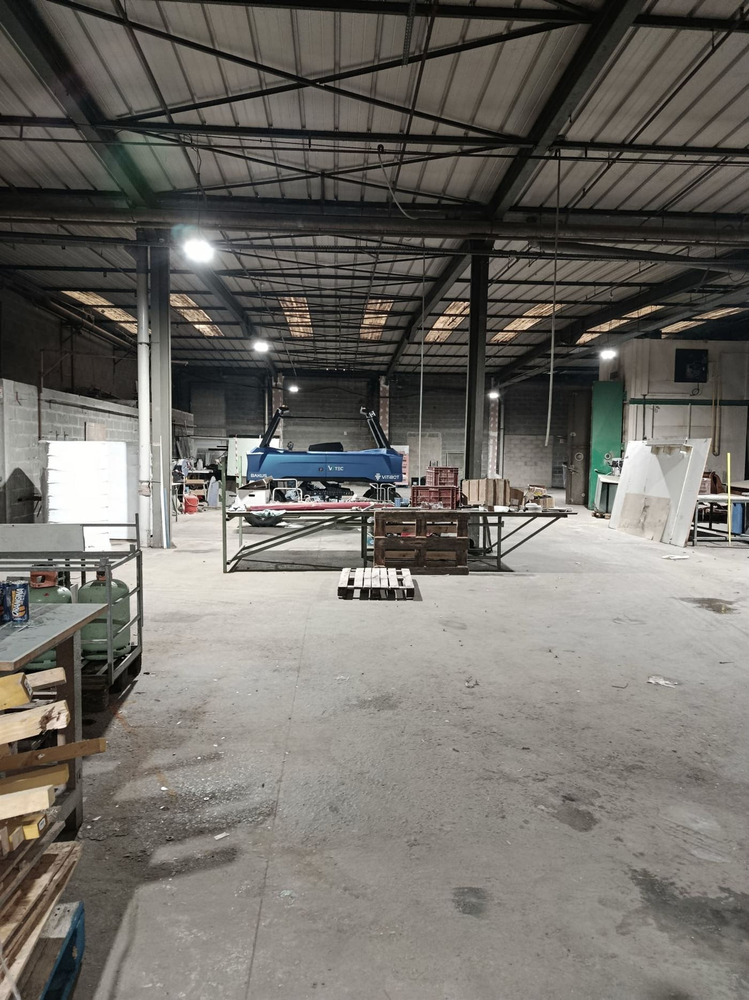
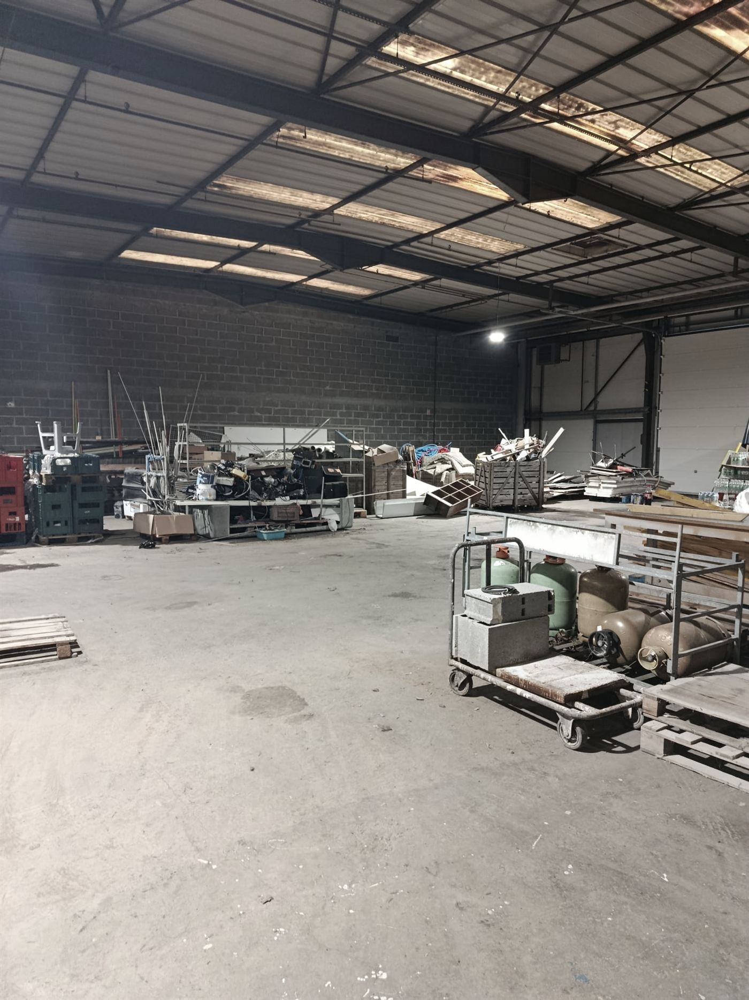

WIP Athletics — salle de cross-training, Hyrox et pole dance à Amboise en Indre-et-Loire. Work. Improve. Progress.
Une salle où l'on vient prendre soin de soi, pas battre un record. Des coachs qui adaptent chaque séance à ce que vous pouvez faire aujourd'hui, douze personnes par cours, et un canapé pour rester après. Quel que soit votre niveau — y compris zéro.
Cinq façons de prendre soin de vous
Personne ne vient pour la même raison. Se remettre en mouvement, se vider la tête, retrouver de la force, ou passer un moment avec des gens. Quatre espaces sous le même toit, plus le Hyrox qui se pratique sur le plateau.
 01
01Plateau cross-training
Les mouvements de la vie — se relever, porter, pousser, tirer — en petit groupe. Chaque exercice a sa version pour celui qui débute. Les créneaux Hyrox s'y passent aussi, sans dossard obligatoire.
 02
02Hyrox
Huit kilomètres de course entrecoupés de huit ateliers de force, identiques partout dans le monde. Ça se passe sur le plateau, sur des créneaux dédiés — et pas besoin de viser une course pour venir : beaucoup s'y entraînent sans jamais prendre de dossard.
Salle affiliée HYROX
 03
03Studio pole & aérien
Force, souplesse et confiance, barre après barre, à son rythme. Rideaux tirés : la première fois, on n'a pas envie d'être vue depuis le parking. On l'a prévu.
 04
04Open gym
Vos écouteurs, votre programme, personne à qui parler si vous n'en avez pas envie. Un coach reste dans la salle si vous avez une question — et ne vient que si vous l'appelez.
 05
05Zone Chill
Canapés, café, grande table. C'est ici que la séance se termine vraiment, et que la salle devient un endroit où on a envie de revenir. On l'a dessinée en premier, avant les racks.
Trois verbes, et aucun ne parle de gagner
Work.
Travailler, c'est venir. Pas performer — se présenter, une fois, puis une autre. C'est le seul effort qu'on vous demande, et c'est déjà beaucoup.
Improve.
S'améliorer, c'est se sentir mieux. Dormir mieux, monter les escaliers sans y penser, porter les courses sans grimacer. Par rapport à hier, jamais par rapport au voisin.
Progress.
Progresser, c'est continuer. Il n'y a pas de ligne d'arrivée, ni de niveau à atteindre. Il y a vous, et la personne que vous étiez le mois dernier.
Ce que vous vous dites, et ce qu'on vous répond
« Je n'ai jamais mis les pieds dans une salle. »
Vous êtes exactement la personne pour qui on a construit l'accueil. Personne ne vous demandera de connaître les mouvements, le matériel ou le vocabulaire. Vous poussez la porte ; le reste, c'est notre travail.
« Il faut être en forme avant de commencer ? »
Non. C'est comme attendre de savoir nager avant de prendre son premier cours. On adapte tout dès la première minute — c'est le métier du coach, pas une faveur qu'on vous fait.
« J'ai 55 ans, ce n'est plus pour moi. »
Les mouvements qu'on travaille sont ceux de la vie courante : se relever, porter, pousser. Ils deviennent plus utiles avec l'âge, pas moins. C'est même la meilleure raison de commencer.
« Je ne veux pas qu'on me regarde. »
Personne ne regarde : chacun est occupé par sa propre série. Et si vous préférez commencer seul, l'open gym existe pour ça — avec un coach à portée de voix, qui ne vient que si vous l'appelez.
Venez voir. On s'occupe du reste.
Trois étapes, sans surprise et sans engagement. Vous décidez à la fin — pas au début.
Vous réservez
Un prénom, un numéro. On vous rappelle pour trouver le créneau qui vous arrange, y compris en dehors des cours.
2 minutesOn fait connaissance
Tour de la salle, puis on parle de vous : ce que vous cherchez, ce que vous avez déjà fait — ou jamais fait — et ce qui vous fait hésiter.
20 minutesVous bougez
Une séance construite pour vous, à deux avec un coach. Puis vous rentrez chez vous, sans rien signer.
45 minutes · offertLe sport doit tenir dans votre semaine
Avant le travail, à midi, le soir, le samedi. Vous choisissez le créneau qui vous arrange — jamais en fonction de votre niveau : chaque cours accueille plusieurs niveaux de pratique.
Des coachs qui accompagnent, pas qui impressionnent
Quatre personnes ont ouvert cette salle. Leur travail n'est pas de vous montrer ce qu'ils savent faire : c'est de comprendre ce que vous pouvez faire aujourd'hui.


Le chantier maintenant, la communauté à partir du 31 octobre
On photographiera les premières fois plutôt que les records, et tous les gabarits plutôt qu'un seul.



Première séance offerte
Réserver→Il y a toujours une bonne raison de venir. Vous n'avez pas besoin d'être plus fort, plus souple ou plus sûr de vous pour pousser la porte : vous pouvez commencer exactement comme vous êtes. La salle ouvre le samedi 31 octobre 2026 ; votre séance se réserve dès maintenant.
Venez voir.
C'est tout ce qu'on demande.
Rien à payer, on vous rappelle avant. 45 minutes, offertes, sans engagement.
C'est noté.
On vous rappelle sous 48 h pour caler votre créneau. Si vous êtes pressé, écrivez-nous directement à bonjour@wipathletics.fr — on répond nous-mêmes.